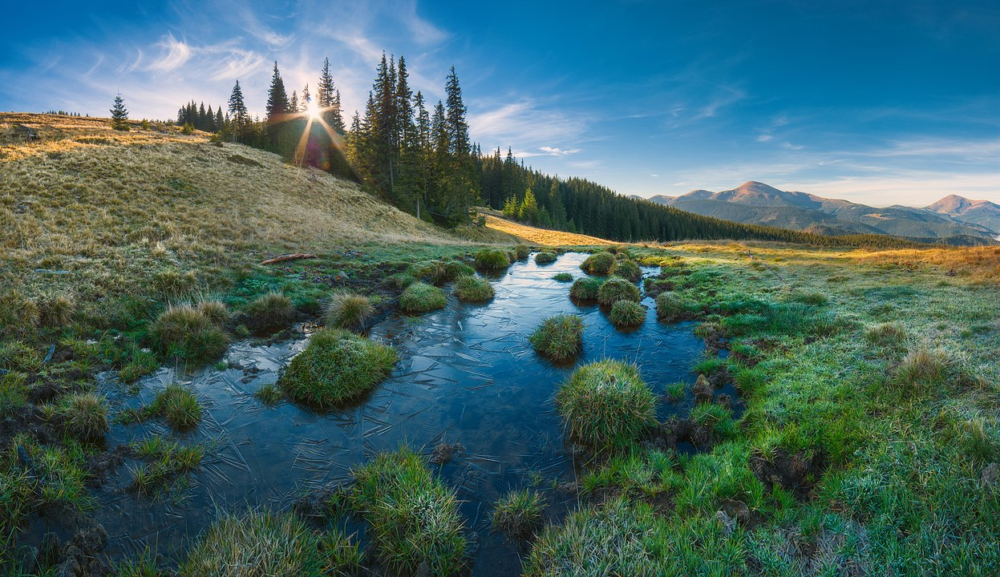
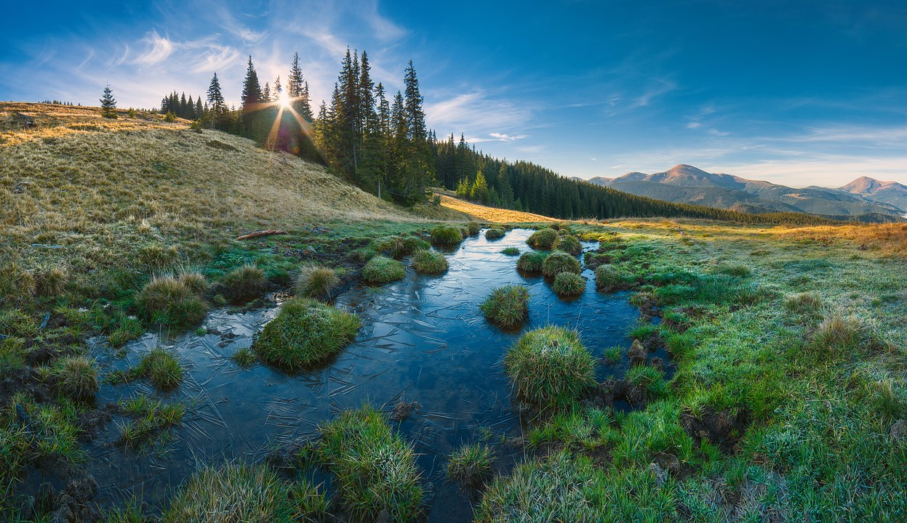

Украї́на
Назва
Украї́на (МФА: [ʊkrɐˈjinɐ]ⓘ) — держава у Східній та частково Центральній Європі. Охоплює південний захід Східноєвропейської рівнини, частину Східних Карпат і Кримські гори. Межує з Румунією й Молдовою на південному заході, з Угорщиною, Словаччиною та Польщею на заході, з Білоруссю на півночі та з Росією на сході й північному сході. На півдні омивається Чорним та Азовським морями. Площа становить 603 700 км². Найбільша за площею країна серед повністю розташованих у Європі.
Станом на перепис 2001 року, населення України становило 48,4 мільйона осіб. Основне й корінне населення України — українці (77,8 % населення на 2001 рік). Також офіційно корінними народами України є кримські татари, караїми та кримчаки. Крім того, значною меншиною є росіяни (17,3 % населення на 2001 рік). Історично однією з найбільших меншин в Україні були також українські євреї.
Історія
Сучасна Україна, обравши за свій герб знак княжої держави Володимира Великого, проводить свою державність від Русі київських князів династії Рюриковичів IX—XIII століть[15]. За часів свого розквіту, у X—XI століттях, Русь була однією з найбільших і найвпливовіших країн Європи[15]. Після монгольської навали спадкоємцем Русі стало Королівство Руське XIII—XIV століть, що згодом було поглинуте Великим князівством Литовським і Королівством Польським. Велике князівство Литовське стало фактичним продовжувачем традицій Русі, в його складі руські землі користувалися широкою автономією. Після об'єднання литовської та польської держав у 1569 році, більшість українських земель перебувало у складі федеративної Речі Посполитої.
Відновлення української державності відбулося під час великого козацького повстання, відомого як Хмельниччина, з 1648 року, наслідком якого стало утворення автономної козацької держави, Гетьманщини, або Війська Запорозького. Обмежену автономність Гетьманщина зберігала до 1764 року, при тому частина земель відійшла до Речі Посполитої, а інша частина знаходилася під протекторатом Московського царства, які поступово поглинули козацьку державу. Згодом українські землі були розділені між Російською імперією та Австро-Угорською монархією.
Державою кримських татар, одного з корінних народів України[12], був Кримський ханат, що існував на південних українських землях у 1441—1783 роках за правління династії Ґераїв. У 1783 році був анексований Російською імперією.
Під час української революції початку XX століття на українських землях постало декілька національних держав, перш за все Українська Народна Республіка (УНР, 1917—1921), а також Кримська Народна Республіка (1917—1918), Українська Держава (1918), Західноукраїнська Народна Республіка (1918—1919) та Кубанська Народна Республіка (1918—1920). УНР наближалася до об'єднання у своєму складі усіх зазначених держав, але внаслідок низки воєн була загарбана сусідами: Радянською Росією, Польською Республікою, Румунським королівством і Чехословацькою Республікою.
З 1919 року, спочатку на східних українських землях зі столицею у Харкові, почала створюватися більшовицька Українська Соціалістична Радянська Республіка (УСРР, згодом УРСР), яка в 1922 році ввійшла до складу Радянського Союзу. Київ став столицею УРСР у 1934 році. Під час Другої світової війни до УРСР були приєднані частина Західної України й Буджак, згодом Закарпаття, а з 1954 року — Крим.
Сучасна Україна
Сучасна держава Україна відновила незалежність внаслідок розпаду Радянського Союзу й проголошення незалежності 24 серпня 1991 року, яке закріпив референдум 1 грудня 1991 року.
Україна є унітарною державою, складається з 24 областей, Автономної Республіки Крим і двох міст зі спеціальним статусом: Києва — столиці й найбільшого міста, і Севастополя.
Україна є парламентсько-президентською республікою. Органом законодавчої влади є Верховна Рада України, яка призначає вищий орган виконавчої влади — Кабінет Міністрів України, що очолюється Прем'єр-міністром. Головою держави та Верховним Головнокомандувачем є Президент України.
Більшість громадян України є християнами, переважно православного віросповідання, також на заході України поширений греко-католицизм. Релігіями корінних народів України є також іслам, юдаїзм і караїмізм. До прийняття християнства Руссю в 988 році панівною була язичницька слов'янська релігія.
Україна — промислово-аграрна країна з переважанням продукування сировини. Вона є одним із провідних експортерів деяких різновидів сільськогосподарської продукції. Господарський комплекс країни включає видобування корисних копалин, деякі галузі машинобудування, чорну й кольорову металургію тощо. Україна є потужним виробником електроенергії. Значні позиції займає виробництво військової техніки та зброї.
Україна є одним із членів-засновників Організації Об'єднаних Націй, а також членом понад сорока міжнародних організацій, зокрема ОБСЄ (1992), МВФ (1992), МБРР (1992), СОТ (2008), Ради Європи (1995), кандидат на членство в ЄС (з 2022).
З 20 лютого 2014 року Україна захищається від збройного вторгнення Російської Федерації, складовими якого є анексія Криму та окупація частини Донецької та Луганської областей. Новий етап російсько-української війни розпочався 24 лютого 2022 року із широкомасштабним російським вторгненням в Україну.
Пам'ятки
Різноманіття природних умов України, її розташування в кількох природних зонах з двома морями, зумовлює досить багате і нерівномірно розподілене біорізноманіття зі значною кількістю ендеміків, перш за все в Кримських горах та в Карпатах.
 


Архітектура
У творчості київської генерації українських архітекторів все частіше зустрічаються прояви постмодерну та хай-теку як віддзеркалення глобалізації процесу розвитку світової архітектури. У нових будовах стильового спрямування вдало використовуються нові конструктивні та художньо-пластичні можливості як традиційних будівельних матеріалів, так і нових — легкі металопластикові конструкції, вишукані оздоблювальні матеріали (готель «Хрещатик», арх. Л. Філенко; діловий комплекс «Зовнішекспосервіс», архітектор О. Донець та ін.; банк «Україна», архітектор С. Бабушкін та ін.; офісний центр «Київ-Донбас», архітектор В. Жежерін та ін.; готельно-офісний центр «Східний горизонт», арх. О. Комаровський, комплекс «Ексімбанк», архітектор І. Шпара та ін.) і багато інших новітніх будов. Реконструкція та оновлення майдану Незалежності в м. Києві також стала знаковою подією, бо утвердила архітектурно-художніми символами новий імідж суверенної України.
З кінця 1980-х років відновилось будівництво релігійних споруд. Нові православні церкви та собори будують переважно у візантійському стилі, рідко у класичному, готичному або псевдоруському стилях. Унікальним є будівництво у стилі українського бароко (собор Архієпископа Харківського Олександра, збудований у 2004 р.).
Мечеті у Криму будують переважно у кримськотатарському стилі. Також серед будівництва мечетей України поширений Османський архітектурний стиль. Тому, що до Османської імперії входила південна частина України.